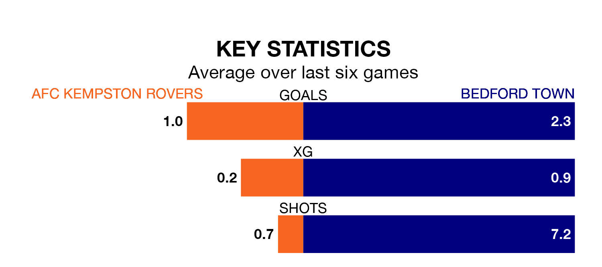

Mid-season relegation candidates AFC Kempston Rovers face a challenge against high-flying Bedford Town at Hillgrounds Leisure on Saturday.
AFC Kempston Rovers are rooted to the bottom of the Southern League Division One – Central table, and have picked up three wins and four draws in their 21 games to date.
Bedford, meanwhile, are top of the standings with 46 points, having won 13 and drawn seven of their first 23 matches.
With 20 goals in 21 games so far this season, Kempston Rovers are the league's lowest scorers with 1.0 goals per game. And they are conceding more than average, letting in 46 goals at a rate of 2.2 per game.
Bedford, meanwhile, are above average scorers, with 2.0 goals per game, compared to a league average of 1.7. They have conceded 0.9 goals per game.
The hosts are in bad form in the Southern League Division One Central, with one win and a draw from their last six games.
With three wins and a draw over that period, Town's form is much better – they have taken 10 points from 18, compared to Kempston Rovers' four.
In the last three years, Kempston Rovers and Bedford have played each other on three occasions. Bedford won all of them.
Their last meeting was on September 3 2022, when Bedford won 2-1 away.
Kempston Rovers' last match was on February 10, a 3-1 loss against Hertford Town.
Bedford drew 1-1 with Kidlington last time out, on Wednesday.
Updated: 12:06 (UTC), 15/02/24